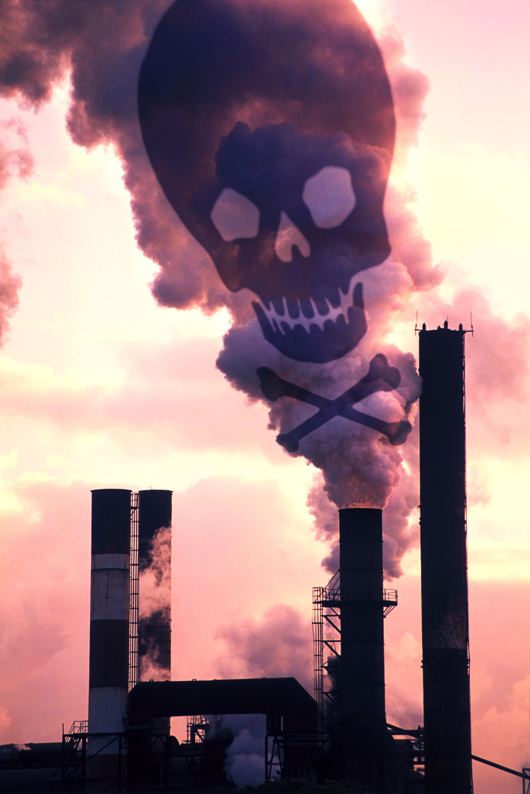

Consecuencias degradación del medio ambiente
- Energía: La demanda energética mundial será un 80% mayor en 2050, y sin un cambio en las políticas, el 85% de esta energía procederá de los combustibles fósiles
- Emisiones: Las emisiones de gases a la atmósfera se incrementarán en un 50%, por lo que la concentración de gases de efecto invernadero podría alcanzar las 685 partículas por millón, cuando los científicos establecen que 450 ppm ya exponen al planeta a los graves consecuencias climáticas.
- Temperatura: Si no se producen cambios en la gestión económica y política, el planeta experimentará un aumento de de temperatura de hasta 6 grados en 2050, sobrepasando con creces el máximo de 2 grados de aumento sobre la temperatura actual que los científicos establecen como seguros.
- Biodiversidad: La biodiversidad terrestre se reducirá en un 10% en 2050, con notables pérdidas en Asia, Europa y Sudáfrica.
- Bosques: Esta reducción de la biodiversidad vendrá dada especialmente a por el descenso de la masa forestal que se espera para entonces. Un estudio de las Naciones Unidas relativo a la Economía y a los Ecosistemas y Biodiversidad estima que la reducción de los bosques generará una pérdida económica de hasta 5 trillones de dólares anuales.
- Agua: Si la demanda mundial de agua se incrementa lo esperado (un 55%), la consumición industrial será un 400% mayor que la actual, lo que implicará que el 40% de la población mundial vivirá en zonas con escasez de agua.
- Contaminación del Aire: La OCDE advierte de que la contaminación del aire se convertirá en la primera causa de mortalidad prematura, especialmente en la India y en el resto de países industrializados.
- Residuos: 1.400 millones de personas seguirán sin acceso al agua y a la sanidad básica dentro de 40 años, y la contaminación del agua, tanto en la dedicada a consumo humano como agrícola, empeorará en todas las rgiones, intensificando las enfermedades y el daño a la biodiversidad acuática.
- Salud: En los países que no forman parte de la OCDE aumentará el riesgo de exposición a productos químicos tóxicos, puesto que las medidas de seguridad son insuficientes y se producirán más productos de este tipo.
- Coste: Esperar a tomar medidas para mitigar estos efectos medioambientales significaría un aumento de hasta el 50% de estas consecuencias, mientras que actuar inmediatamente para reducir las emisiones en un 70% para 2050 supondría el 5,5% del PIB global cada año.

El papel de la ecología en nuestras vidas
Las muchas especialidades dentro de la ecología nos proporcionan información que nos permite comprender mejor el mundo que nos rodea y que puede ayudar a mejorar nuestro Medio Ambiente, la gestión de nuestros recursos naturales y la protección de la salud humana. Los siguientes ejemplos ilustran sólo algunas de las formas en las que el conocimiento ecológico ha influido positivamente en nuestras vidas.